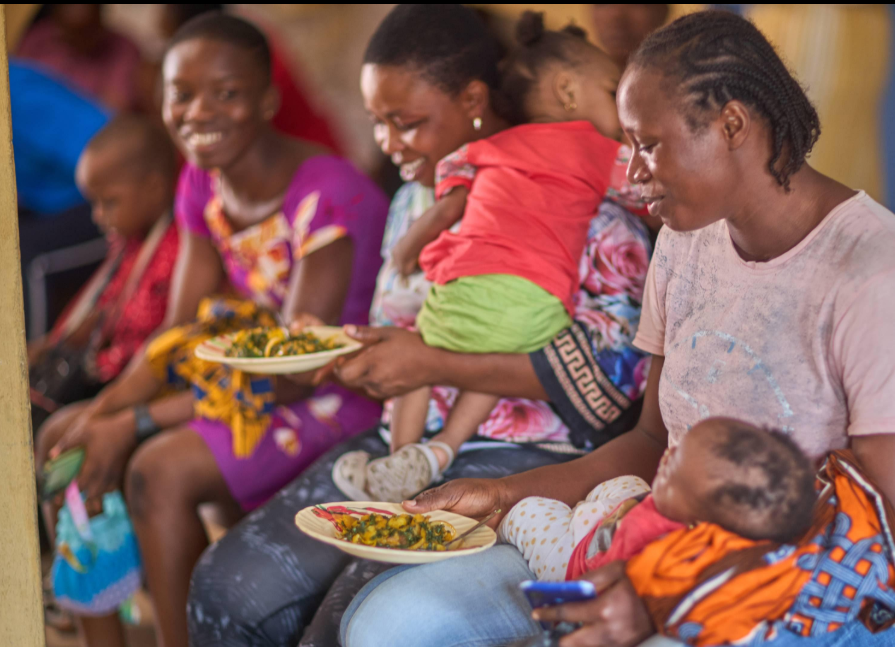

Nutrition Education
Evidence-informed nutrition information for individuals and communities.
Learn moreNUTRITION • RESEARCH • TECHNOLOGY
Exploring practical nutrition solutions through science, community health and digital innovation.
ABOUT ME
I am Muhsin Habibu Ally, a Human Nutrition graduate with experience in nutrition assessment, community nutrition education and research. I am also developing my skills in digital technology to make useful information and tools more accessible.
WHAT I OFFER
Evidence-informed nutrition information for individuals and communities.
Learn moreProvide individualised nutrition assessment and meal planning for individuals and groups.
Learn moreSupport with nutrition research, data organization and report preparation.
Learn moreClear, engaging educational content about food and nutrition.
Learn moreMY WORK

Undergraduate Research
Research on knowledge, awareness and practices regarding dietary diversification among mothers with children under five.
Research methods, key findings and recommendations can be displayed on the full project page.
Dietary diversification is important for providing children under five years with a variety of nutrients needed for healthy growth and development. However, inadequate dietary diversity can contribute to nutritional deficiencies and malnutrition. In Tanzania, child malnutrition has been a significant public health concern, making appropriate infant and young child feeding practices an important area of nutrition research.
This study investigated the knowledge, awareness and practices of dietary diversification among mothers with children under five years in Mbeya Region, Tanzania. It also examined the factors influencing mothers' food choices and their ability to provide varied diets for their children.
To assess knowledge, awareness and practices regarding the consumption of diversified diets among mothers with children under five years.
The study used a cross-sectional survey design and a primarily quantitative research approach to assess dietary diversification among mothers with children under five years in Mbeya Region, Tanzania.
Mothers with children under five years of age who met the study's eligibility criteria and consented to participate.
The report specifies a sample size of 90 participants, calculated using Cochran's formula.
The methodology describes random sampling alongside convenience sampling, including recruitment during clinic days and Village Health and Nutrition Days.
Primary data were collected through face-to-face interviews using structured questionnaires. The report also describes observation and key informant interviews as data collection methods.
The report identifies Statistical Package for the Social Sciences (SPSS), version 20.0, and Microsoft Excel for data analysis. Descriptive statistics, including frequencies, percentages, means and standard deviations, and cross-tabulations were described.
The report describes informed consent, participant coding and confidentiality measures intended to protect participants' identities.
The study explored mothers' knowledge, awareness and practices regarding dietary diversification among children under five years in Mbeya Region, Tanzania. The findings highlighted the importance of nutrition awareness, practical meal planning, access to diverse food ingredients and support in preparing varied meals for young children.
The study also identified practical challenges that may affect dietary diversification, emphasizing the need for nutrition education and locally appropriate strategies to support mothers in providing varied diets.
Detailed statistical findings will be presented following verification of the final research dataset.
The study highlights the importance of addressing both nutrition knowledge and the practical circumstances that influence dietary choices. Awareness of dietary diversification alone may not ensure consistent implementation when mothers face difficulties accessing ingredients or preparing varied meals.
Nutrition education should combine information about the benefits of dietary diversity with practical guidance on selecting, preparing and combining locally available foods.
Healthcare facilities and community nutrition initiatives could use the findings to identify common feeding challenges and design educational activities that respond to mothers' reported needs.
Affordable recipes, meal-planning guides and educational materials could help translate nutrition knowledge into everyday household practices.
The findings may inform the design of locally appropriate nutrition interventions in Mbeya. However, the study's cross-sectional design does not establish that any particular intervention will improve child nutritional status.
Further research using clearly defined dietary diversity indicators and verified participant-level data could help establish more precisely how mothers' knowledge and reported practices relate to children's dietary intake.
Overall, the study emphasizes the need to combine nutrition education, improved access to diverse foods and practical support for mothers to encourage more consistent dietary diversification.
Open the complete research document:
View full research documentGET IN TOUCH
Interested in collaboration, research or nutrition services?